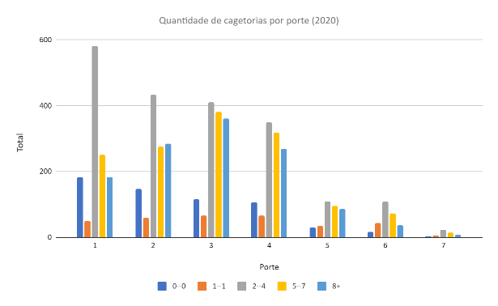

Desafios de proteção social adaptativa no contexto brasileiro de crises sinérgicas
Introdução
No nível federal do poder executivo brasileiro, a 3a gestão Lula da Silva, iniciada em janeiro de 2023, deparou-se com uma vultosa crise socioambiental qualificada, institucionalmente, como crise “climática” [1]. Ao assumir o referido qualificativo como o cerne do problema e, por decorrência, como o norteador do plano discursivo e prático institucional, ao agrado de fóruns multilaterais, o aparato estatal promoveu uma enviesada gradação de reconhecimento da legitimidade dos recursos de voz dedicados ao problema. Enviesada, não no sentido concernente ao qualificativo “climático”, pois permaneceu bem-vinda a variedade de abordagens não-terraplanistas. Mas, no sentido de secundarização das competências técnicas, científicas, políticas e comunitárias dedicadas ao autêntico cerne, ancorado no substantivo “crise”. Ao promover tal gradação de importância, tanto para interpretar a conjuntura quanto para propor recomendações, o aparato público escamoteou e protelou, mais do que propiciou, a revelação da essência e da complexidade do problema a ser enfrentado. Ao fazê-lo, empalideceu as root causes, de natureza social, rendido às imagens e cenários assombrosos de anomalias climáticas. Tal rendição é o que tem permitido que, em simultaneidade de discussão de metas de longo prazo redução de emissão de gases de efeito estufa (GEEs) em fóruns multilaterais, cortes em verbas destinadas à proteção social sejam aventados para o alcance de metas econômicas, no concernente ao denominado “Arcabouço Fiscal”.
No âmbito de uma dada coletividade, crise é uma circunstância disruptiva, de caráter deletério para a vida social, produtora de tensões aguda, acionada pela súbita e inequívoca manifestação, presente ou iminente, de uma séria ameaça ao bem-estar desta coletividade, exigindo-lhe a adoção de medidas impostergáveis, ainda que pairem incertezas acerca da evolução da situação e de seus desdobramentos sociais, econômicos, políticos, ambientais e espaciais [2]. Tão mais complexa é uma crise quanto mais multifacetadas e interconectadas forem as perturbações, potenciais ou efetivas, sofridas. Isso inclui a sobreposição espaciotemporal de uma dada crise com outras, agudas e crônicas, de diferentes naturezas, entrelaçando-as. O qualificativo climático, por seu turno, acompanha a ideia de crise quando remete a um conjunto de consideráveis perturbações nas dinâmicas não-lineares de sistemas naturais interconectados – indo dos sistemas atmosféricos aos oceânicos –, das quais decorrem o aquecimento global [3], para as quais o meio social ainda não se encontra devidamente preparado para enfrentar. Tais perturbações, induzidas pela descontrolada emissão de GEEs, intensificam e espraiam os eventos ditos severos ou extremos, tais como os episódios de tempestades, tornados, furacões, secas, ondas de calor, vendavais, incêndios florestais e afins [4]. Mas, uma das perguntas que se impõe – para além da legítima preocupação com as estratégias de redução da temperatura global competências técnicas, científicas, políticas e comunitárias – é: quais são os obstáculos, de natureza social, que impedem uma preparação condigna para lidar tais eventos? Isto é: por que um estado permanente de crise acompanha a experiência social de vivenciamento desses eventos?
A crise tem relação com a plena manifestação de tais ou quais destes eventos, mas não se confunde com eles, porquanto se trata do processo socialmente estressante no enfrentamento da situação, mensurada pelo tamanho da dificuldade dos atores implicados em produzir estratégias de mitigação de danos a contento. Ilustrativamente, não é da tempestade manifesta que se trata, mas do despreparo coletivo – sobretudo, institucional –, a despeito da chuva inclemente, para manter minimamente viáveis e operacionais os infrasistemas de drenagem, de eletricidade, de abastecimento público, de comunicação, assim como a integridade de edificações, dos principais fluxos de trânsito e de rotinas socioespaciais locais imprescindíveis. Crise é quando há recorrência da fragilidade das estratégias postas em curso, na prevenção e preparação para confrontação com tais eventos severos ou extremos, escamoteada, discursivamente, pelo desvio da atenção pública, com conivência midiática, para a demonstração das excepcionais “forças da natureza”. Crise é a recorrente negligência estatal diante cenários ambientais sombrios e já sabidos, que se cumprem, e que redundam em sucessivas perdas de vidas, de locais de moradia e de trabalho, gerando prejuízos econômicos, individuais e coletivos, de grande monta e de difícil reparação. Crises são os processos locais de vivenciamento de desterritorializações forçadas – as remoções, como higienismo social contemporâneo que recorrentemente se vê nas periferias urbanas brasileiras –, quando não há vontade política para anteparar o direito ao lugar, à moradia digna, através do acionamento de soluções tecnológicas inovadores e compatíveis com os riscos (climáticos, geomorfológicos) preditos. Crise é quando a iminência de comprometimento de estoques de água doce, superficiais e/ou subterrâneos, de perdas irreversíveis de viabilização de áreas antes agricultáveis, de biomas e ecossistemas vitais para a manutenção de certas espécies da flora e fauna silvestres e/ou demais situações de ameaça direta à sobrevivência humana não encontram a prioridade, centralidade e celeridade na agenda institucional pública. Assim, a ideia de crise diz respeito aos morosos e titubeantes esforços dos atores políticos e econômicos decisórios, em diferentes escalas de poder, em se comprometerem com mecanismos resolutivos para atenuar a configuração de encontro do meio social com eventos severos e/ou extremos de diferentes tipos [5;6;7]. Crise é sobre procrastinação em responder resolutamente aos ditames de dignidade para os estratos sociais vulneráveis da sociedade e, assim, retroalimentar o contexto dramático a que estes estarão expostos. Enfim, crise é sobre o paulatino esgarçamento da legitimidade das instituições públicas, fomentando um ambiente propício à instauração de um caos social, no qual as forças sociais ambientalmente progressistas dedicam-se a cálculos de emissão de gases e aquelas conservadoras – senão mesmo, reacionárias –, voltam-se à defesa de setores poluentes, ambos pouco dedicados a afrontar as estruturas do Capitaloceno [8].
Uma vez a materialização célere dessas crises entretecidas, tem sido oportuno o ativismo socioambiental que denuncia a protelação multilateral do acionamento de mecanismos de proteção social daqueles que se encontram em maior situação de fragilidade social ante à exposição a tais ameaças, as quais escalam e se metamorfoseiam [9]. Isso tem colaborado para que, nos fóruns multilaterais, as discussões avancem e sejam mais receptivas àquilo designado como proteção social adaptativa. Esta orienta-se, essencialmente, à priorização da criação de fundos e adoção de medidas estratégicas de fortalecimento da cidadania dos que se encontram em situação de desfiliação social. Visa dotá-los de maiores habilidades e competências de autoproteção diante as ameaças preditas, seja através do reforço de seus conhecimento sobre o assunto, de suas estratégias de apoio mútuo ou de seus meios e modos de vida, colaborando para torná-los mais versáteis na prevenção e preparação às adversidades, que vivenciam e/ou que se avizinham, quanto mais aptos na capacidade local de responder e recupera-se quando um desastre for inevitável [10].
No contexto institucional brasileiro, compete ao Ministério do Desenvolvimento Social (MDS) desenhar e dar efetividade à rede de proteção social corrente àqueles que se encontram socioeconomicamente fragilizados e que, em razão disso, são os sujeitos mais passíveis a experenciar as circunstâncias ambientais adversas atípicas acima mencionadas; portanto, os que primeiro hão de demandar, igualmente, acesso à proteção social adaptativa [11]. Mas, não os únicos, posto que as circunstâncias de espraiamento dos desastres hão de produzir novos desfiliados sociais. Isso suscita, dentre várias indagações, as seguintes: no contexto brasileiro, a evolução das ocorrências de desastres aponta favoravelmente para um lastro institucional sólido, focado na efetividade de um compromisso de proteção social adaptativa? Quais os desafios, ao situá-la no plano territorial e assistencial hodiernos, em que as crises estão amalgamadas umas nas outras?
Ao objetivar oferecer subsídios quantitativos e analíticos para favorecer o debate em torno das questões acima elencadas, nos deteremos sobre três aspectos da ‘herança maldita’ recebida pelo 3º governo Lula, concernente ao período de crises sinérgicas ocorrido entre os anos 2016-2022 [12]. Tendo em consideração os estratos de porte municipal, que trazem pistas relevantes acerca de quais caminhos a proteção social adaptativa deveria passar para confrontá-la, trataremos dos seguintes aspectos, a saber: (a) a dinâmica de decretações de emergências e os eventos associados à deflagração das mesmas; (b) a (in)sustentabilidade das composições de ocupação territorial; por fim, (c) o nível de dependência social local de políticas assistenciais correntes e emergenciais. Ao focalizá-los em suas especificidades, as ponderações finais debruçam-se sobre os encadeamento entre eles e os desafios que a designação ‘adaptativa’ lança à relação da sociedade brasileira com o Estado.
Materiais e Métodos
Em relação aos perfis dos municípios brasileiros e o correspondente porte populacional de cada qual, foi utilizado o Perfil dos Municípios Brasileiros do IBGE1 [13]. O porte municipal, nos sete estratos delineados pelo IBGE (Tab.1), é uma referência demográfica de assaz relevância para o tratamento dos dados relacionados aos três aspectos supramencionados, uma vez que este tipo de estratificação pode sinalizar tanto para a eventual debilidade/robustez institucional para dispor dos meios requeridos na confrontação dos eventos ameaçantes, manifestos ou iminentes – e subsequentes providências requeridas –, como para os diferentes níveis de complexidade socioespacial.
Tabela 1: Portes municipais referidos ao tamanho da população.
| Porte | Limite Inferior | Limite Superior |
|---|---|---|
| 1 | 0 | 5000 |
| 2 | 5001 | 10000 |
| 3 | 10001 | 20000 |
| 4 | 20001 | 50000 |
| 5 | 50001 | 100000 |
| 6 | 100001 | 500000 |
| 7 | 500001 | < 500001 |
Fonte: IBGE (2022).
Quanto às decretações de emergências, reconhecidas pela esfera federal de governo e considerando a sua evolução quantitativa e tipologia de desastres – esta última, obedecendo à Classificação e Codificação Brasileira de Desastres (COBRADE) –, os dados foram extraídos do Sistema Integrado de Informações sobre Desastres2(S2ID).
No que tange aos dados de uso e ocupação do solo, buscou-se entender a (in)sustentabilidade das composições territoriais municipais/estaduais/macrorregionais, utilizando-nos da base de dados MapBiomas. Esta combina técnicas de sensoriamento remoto, aprendizado de máquina e computação em nuvem baseando-se em dados do Landsat [14]. Empregamos cinco classes de cobertura e uso das terras, a saber: (a) Formação Florestal (nível 1); (b) Formação Natural não florestal (nível 1); (c) Agropecuária (nível 1); (d) Área Urbanizada (nível 2) e (e) Corpo D’água (nível 1).
Por fim, no referente aos aspectos assistenciais, as variáveis consideradas foram o Cadastro Único3 (CadÚnico), o Programa Bolsa Família4 (PBF) e o Auxílio Brasil. O CadÚnico registra e identifica famílias de baixa renda do país a fim de selecioná-las para subsequente inclusão e concessão de benefícios oferecidos por programas sociais federais, estaduais e municipais. O Programa Bolsa Família, deflagrado na 1.a gestão Lula da Silva, concede uma renda mensal às famílias em situação de baixa renda a partir das informações do referido cadastro. Já o Auxílio Brasil, como programa social de transferência de renda, substituiu o Bolsa Família durante o período de novembro 2021 a março de 2023 (gestão federal Bolsonaro, seguida dos três primeiros meses da 3.a gestão Lula da Silva). Neste estudo, com foco da dependência social de políticas assistenciais, o Bolsa Família e ao Auxílio Brasil foram agrupados no período analisado (2016-2022). Os dados foram recuperados do Visualizador de Dado Sociais5 (VIS DATA) do Ministério do Desenvolvimento Social. Para o CadÚnico, foi analisado a quantidade de pessoas inscritas, por sexo. Esses dados foram disponibilizados pela Secretaria de Avaliação Gestão da Informação. No caso do Bolsa Família, foi considerado o número de famílias beneficiadas, conforme os dados do Ministério da Cidadania. No caso do programa Auxílio Brasil, foi analisado o quantitativo de famílias cadastradas, de acordo com as informações oriundas da Secretaria Nacional de Renda e Cidadania (SENARC).
Resultados e Discussão
No que tange às questões suscitadas no início deste estudo, os dados e as sucintas análises aqui trazidas, referentes ao período em tela, apontam para a dificuldade institucional de suplantar as crises que ora se apresentam e que se enodoarão com aquelas que estão por vir. Ou seja, ruma-se, no Brasil, para uma perenização do estado de crise, em consonância com os radicalismos políticos, as injustiças sociais, econômicas e ambientais que se avolumam, avançando de escalas locais para regionais e destas para nacionais e global [14; 15;16].
As curvas ascensionais de decretação de emergência apontam para a generalização da vulnerabilidade institucional municipal, posto que denotam um “pedido do socorro” contínuo dos municípios brasileiros aos níveis superiores de governo ao se depararem com eventos severos ou extremos, recorrentes ou inéditos, de diferentes naturezas (Figs. 1 e 2).
Figura 1: Evolução anual e acumulada do número de decretos de emergência.
Fonte dos dados: S2ID (2024).
Figura 2: Evolução da decretação de emergência por tipo de evento associado ao desastre.
Fonte dos dados: S2ID (2024).
Em comparação dos demais estratos populacionais, os municípios de pequeno porte (porte 1 e 2, com até 10 mil habitantes) concentram quase metade do conjunto de municípios brasileiros (no ano de 2022, somam 2451 municípios de um conjunto de 5.570) e cujas perdas populacionais não são expressivas. Porém, são estes que são mais recorrentes em decretar emergência, indicando incapacidades ou impossibilidades sistêmicas de proteger os munícipes expostos a tal ou qual fator de ameaça (Fig.3).
Figura 3: Distribuição dos decretos de emergência por porte populacional municipal.


Fonte dos dados: IBGE (2022) e S2ID (2024).
Portanto, quando as instituições dedicadas, central ou transversalmente, ao enfrentamento de desastres os encadeiam, quase automaticamente, às questões climáticas, deixam escapar a compreensão das estruturas institucionais debilitadas, sobretudo, dos municípios demograficamente menores e que são os menos preparados tecnicamente para compreender e bater as root causes das crises que solapam reiteradamente a segurança humana de seus cidadãos. Uma das causas de fundo é a problemática racionalidade socioespacial dominante que organiza os modos de uso e ocupação do solo nos municípios brasileiros (Fig. 4). Considerando que, historicamente, os municípios de maior porte (respectivamente, portes 6 e 7, que compreendem mais de 100.000 habitantes) referenciam a racionalidade do desenvolvimento socioespacial a ser seguida pelos demais, vê-se que a correlação virtuosa (positiva) entre área vegetada e mananciais superficiais se faz seguir pela correlação negativa entre tais áreas vegetadas e as infraestruturas urbanas, assim como entre estas últimas e o espaço agropecuário e, no porte 6, da associação negativa entre o urbano e o espaço dos mananciais hídricos superficiais. Enfim, esses arranjos espaciais não indicam um processo ambientalmente sustentável e traz implicações deletérias e de larga escala para a dinâmica climática.
Figura 4: Correlação entre classes de uso do solo por porte.
Fonte dos dados: IBGE (2022) e MapBiomas (2024).
Por fim, no Brasil, há expressiva dependência, de parcela da sociedade, da efetividade de políticas assistenciais para fins de garantia de provimento dos seus mínimos vitais. E, desafortunadamente, não há sinais estatísticos de recuo nessa relação socioeconômica – mas também, sociopolítica – de dependência.
No que tange à evolução de indivíduos inscritos no CadÚnico, no período de 2016 a 2022, foi ascensional o contingente de cadastrados – portanto, de sujeitos socialmente desfiliados –, notadamente em municípios de maior porte demográfico. Isso denota que as grandes cidades, ao produz a sua pujança econômica, deixam um rastro persistente e crescente de pobreza e miséria. No ano de 2016, os municípios do porte populacional 7, nas cinco macrorregiões do país, tinham uma média de 157.971 inscritos no CadÚnico. Ao final do período analisado, em 2022, este porte municipal congregava uma média de 190.443 inscritos, entre sujeitos do sexo masculino, numa evolução ascendente de desfiliados sociais, do tamanho de um município de porte médio. E, no referente à dimensão de gênero, são as mulheres as que mais demandam e têm as suas inscrições acolhidas, posto que elas eram, em média, 235.517, em 2016, e passaram e ser, em média 280.991inscritas em 2022. (Tabs. 2 e 3).
Tabela 2: Média de cadastrados no CadÚnico, sexo feminino.
| Porte | 2016 | 2017 | 2018 | 2019 | 2020 | 2021 | 2022 |
|---|---|---|---|---|---|---|---|
| 1 | 995 | 971 | 937 | 905 | 893 | 923 | 1043 |
| 2 | 2164 | 2118 | 2075 | 2030 | 2012 | 2071 | 2288 |
| 3 | 4367 | 4266 | 4175 | 4082 | 4026 | 4113 | 4617 |
| 4 | 8620 | 8383 | 8187 | 8034 | 7971 | 8138 | 9168 |
| 5 | 17225 | 16666 | 15953 | 15626 | 15493 | 15882 | 18123 |
| 6 | 36916 | 35911 | 33920 | 33482 | 33871 | 35338 | 42773 |
| 7 | 235517 | 229586 | 211905 | 207694 | 206954 | 215910 | 280991 |
Fonte: VIS DATA, Ministério do Desenvolvimento Social/MDS.
Tabela 3: Média de cadastrados no CadÚnico, sexo masculino.
| Porte | 2016 | 2017 | 2018 | 2019 | 2020 | 2021 | 2022 |
|---|---|---|---|---|---|---|---|
| 1 | 916 | 889 | 852 | 817 | 806 | 828 | 939 |
| 2 | 1944 | 1886 | 1843 | 1801 | 1785 | 1824 | 2019 |
| 3 | 3850 | 3738 | 3646 | 3565 | 3517 | 3568 | 4016 |
| 4 | 7216 | 6975 | 6812 | 6699 | 6671 | 6767 | 7633 |
| 5 | 13580 | 13056 | 12445 | 12195 | 12153 | 12381 | 14146 |
| 6 | 26925 | 26112 | 24685 | 24427 | 24803 | 25795 | 31172 |
| 7 | 157971 | 153907 | 141651 | 139496 | 139654 | 145514 | 190443 |
Fonte: VIS DATA, Ministério do Desenvolvimento Social/MDS.
Quanto à cobertura das famílias pelas principais políticas assistenciais no período 2016-2022, a saber, o Bolsa-Família e o Auxílio Brasil, chama a atenção, que as decretações de emergências que se espraiaram pelos municípios de todo o país se deram em razão de um desastre relacionado a um agente biológico, disseminador de uma doenças infecciosa viral (COBRADE 1.5.1.1.0), e não devido a eventos associados ao clima. Disso decorreu uma vultosa crise de saúde com desdobramentos numa crise socioeconômica, a qual precisou ser mitigada, em atendimento aos que se encontravam em situação de vulnerabilidade extrema, através de um acentuado aumento do número de famílias cobertas pela política assistencial posta em curso (Auxílio Brasil) em comparação com os níveis de atendimento dos anos anteriores, que já denotavam uma crise social permanente. Há que se ponderar, no entanto, que as root causes – isto é, natureza estrutural do problema – não foram a plena manifestação do evento ameaçante de natureza biológica, mas a visão deturpada do gestor nacional acerca da magnitude do problema a ser enfrentado bem como a forma de fazê-lo, mal orientando as providências técnicas devidas e ganhando a equivocada adesão sociopolítica que engendrou tantas vítimas – milhares delas, fatais – e procrastinação quanto à adoção de medidas sanitárias apropriadas.
A crise política suscitada pelos choques e embates interpretativos entre os diferentes níveis da gestão pública e destes com variados quadros técnicos e competências envolvidos – da segurança pública à economia, da epidemiologia à assistência social – colaborou para um contexto de pré-convulsão social e crise institucional, de incremento do fanatismo ideológico, de indução comportamental de lideranças à exposição a riscos de saúde e, finalmente, aumento exponencial de vítimas fatais pela Covid-19. Foram, em média, 103.361 famílias assistidas, no ano de 2022, nos municípios de porte 7, contra apenas 65.634 no ano de 2016, o que igualmente sinaliza para o incremento do refugo humano [17] no território expoente do progresso econômico (Tab. 4).
Tabela 4: Número médio de famílias atendidas pelo Programa Bolsa Família ou Auxílio Emergencial.
| Porte | 2016 | 2017 | 2018 | 2019 | 2020 | 2021 | 2022 |
|---|---|---|---|---|---|---|---|
| 1 | 300 | 294 | 299 | 288 | 288 | 298 | 394 |
| 2 | 723 | 717 | 751 | 737 | 733 | 752 | 959 |
| 3 | 1553 | 1522 | 1576 | 1539 | 1527 | 1557 | 2019 |
| 4 | 2986 | 2929 | 3035 | 2977 | 2965 | 3009 | 3885 |
| 5 | 5410 | 5244 | 5379 | 5336 | 5303 | 5421 | 7205 |
| 6 | 9668 | 9257 | 9410 | 9190 | 9498 | 9989 | 14772 |
| 7 | 65835 | 62052 | 60822 | 58182 | 60027 | 64789 | 103361 |
Fonte: Ministério da Cidadania, Secretaria Nacional de Renda e Cidadania (SENARC).
Assim, é possível considerar que a dinâmica de decretações de emergência sinaliza para uma contínua incapacidade/impossibilidade institucional de contenção/mitigação de fatores ameaçantes aos meios e modos de vida das localidades afetadas. Esta perenização dos desastres – por vezes, similares em suas características socioambientais; noutras, entremeados com outros tipos de crises, que os metamorfoseiam – não apenas coloca em risco o suprimento contínuo dos mínimos vitais aos inscritos no CadÚnico e beneficiários das políticas assistenciais regulares (como, por exemplo, em relação ao abastecimento hídrico de moradias de famílias vulneráveis num contexto de emergência relacionada às secas), como ainda produz novas e imperiosas demandas ao gestor público, tais como aquelas voltadas à restituição de perdas e danos de bens móveis e imóveis, ao atendimento à saúde física e mental dos grupos sociais afetados assim como à recuperação ambiental e infraestrutural da localidade perturbada.
A visão sistêmica dos elementos constitutivos do espaço em iminente ameaça ou efetivamente afetado é o que viabiliza organizar, numa sequência setorial lógica, os processos de preparação ou, no pior dos casos, de recomposição de fluxos e fixos prioritários dos quais a comunidade exposta ou atingida depende. Isso implica, ao gestor público, o desafio não apenas de garantir aos beneficiários regulares de políticas assistenciais o acesso célere aos seus parcos recursos – quando, por vezes, sua documentação pessoal e cartão bancário foram extraviados no contexto de desastre, o que a universalização da biometria pode mitigar – mas garantir preliminarmente que os equipamentos bancários locais estejam viáveis para a prestação de tais serviços ou disponibilizar um equipamento itinerante com similares funções. Isso significa que a proteção social adaptativa não deva se referir, apenas e tão somente, à interlocução direta com o sujeito de direitos, mas englobe, de modo concatenado, providências ligeiras de manutenção ou recuperação de infraestruturas viárias, hídricas, elétricas, de comunicação, de saúde e de saneamento básico, além de identificação, disponibilização e adequação de equipamentos públicos para a serventia como abrigos temporários a fim de que o atendimento tempestivo a que tais sujeitos fazem jus seja prestado.
No contexto de desastres, aos já inscritos no CadÚnico vão juntar-se outros tantos novos sujeitos destituídos pelas circunstâncias adversas que experenciaram e que os levou a perder a sua capacidade de autoprovimento. Também aqui, cabe a tarefa institucional de procurar maneiras não convencionais de acionar a interoperabilidade setorial, como através de uma política emergencial de moradia, que propicie a proteção da vida privada das famílias afetadas [18]; uma política emergencial de crédito, que oportunize a retomada das atividades econômicas aos que não tenham lastro patrimonial para oferecer em garantia [19]; uma política de saúde mental, que colabore na ressignificação coletiva dos acontecimentos e evite o incremento dos quadros de estresse pós-traumático, depressivos, de fobias e correspondente medicamentalização [20] e assim por diante. Ilustrativamente, membros empobrecidos de uma comunidade cujas moradias foram destruídas num episódio de desastre associado a chuvas torrenciais – com consequente destruição dos imóveis, perda de bens, familiares mortos e feridos –, podem já estar contemplados com o Bolsa Família, mas requererão um auxílio emergencial para o provimento de uma alternativa habitacional, aquisição de novos móveis e eletrodomésticos essenciais, como cama e fogão, reposição de materiais de trabalho, vestuário, itens de higiene, ademais de cuidados de saúde em vista dos agravos físicos e/ou emocionais.
Esse aglomerado de demandas, fruto da sinergia entre uma crise estrutural – da miséria e pobreza difíceis de extirpar – e uma crise aguda – a do desastre – não é diretamente equacionável. Quanto mais os desastres avultem, seja pela severidade da ocorrência ou devido ao seu espraiamento, mais se constata o amadorismo e a improvisação como o ente público responde à situação, sobretudo em municípios de pequeno porte. Isso indica que uma confrontação entre as capacidades institucionais instaladas e os ditames dos direitos humanos dos grupos sociais afetados precisa ser travada, pondo-se à inspeção a qualidade das soluções postas atualmente em curso [21].
Conclusão
Em vista do exposto, é possível supor que a noção de proteção social adaptativa, derivada do contexto de discussão multilateral sobre crise climática, vem obnubilando as discussões sobre a própria ideia de crise, do que decorre um insistente despreparo institucional para complexificar o processo social implicado.
No caso brasileiro, está-se muito além da crise climática. Quando decretos de emergência deixam de ser dispositivos legais adotados circunstancialmente pela máquina pública e passam a ser um dispositivo legal de uso frequente, isso indica um processo de esgarçamento social, tanto porque afasta insistentemente a normalidade dos procedimentos institucionais públicos no seu relacionamento com o cidadão, substituída por práticas excepcionais da administração pública, menos transparentes e menos participativas, quanto porque revela a incapacidade de enfrentamento antecipado de ameaças, muitas das quais, de recorrente manifestação. Recorrência de emergências é um terreno fértil para que ameaças inéditas logrem igual sucesso em sua materialização, em detrimento do bem-estar social.
Para além do fator climático, o redesenho institucional do sistema de defesa civil e das concepções doutrinárias ali aninhadas é urgente. É preciso orientar esse sistema para uma melhor compreensão social das crises sinérgicas e para uma atuação preventiva e preparativa mais colaborativa com as comunidades, alinhada com a pluralidade de viveres e saberes, ao invés de ‘jogar no colo’ da assistência social levas de novos desfiliados sociais, que perdem o seu horizonte de dignidade quando os desastres os engolfam. Esse, talvez, seja um aspecto sociotécnico vital para anteparar a robustez de estratégias intersetoriais voltadas para uma proteção social adaptativa.
Conclui-se que o conjunto constituído pelo mal enfrentamento de eventos ameaçantes, inéditos ou recorrentes, pelos nexos territoriais ambientalmente insustentáveis e pelo recrudescimento da incapacidade de autoprovimento econômico reforça um contexto institucional, espacial e social opressivo, traduzindo-se numa antítese ao desiderato de implementação deste tipo de proteção social.
AGRADECIMENTOS
N.V., R.R.S e G.G.C agradecem à Fapesp pelo apoio a esta pesquisa, processo número 2022/09136-1.
N.V. agradece ao CNPq ao apoio na forma de Bolsa de Produtividade, processo número 316828/2023-8.
R.S.S. agradece à Fapesp pelo apoio na forma de Bolsa de Pós-Doutorado, proc. número 2024/03793-6.
G.G.C agradece à Fapesp pelo apoio na forma de Bolsa de Mestrado, processo número 2023/03000-3.
Referências
[1] BRASIL. MINISTÉRIO DO MEIO AMBIENTE E MUDANÇA DO CLIMA – MME. 5ª Conferência Nacional do Meio Ambiente: Emergência Climática, o desafio da transformação ecológica. Documento Base. Brasília: MMA, 2024.
[2] ANSELL, C.; BOIN, A.; FARJOUN, M. Dynamic Conservantism: how institutions change to remain the same. In: KRAATZ, M. S. (org.). Institutions and Ideals: Philip Selznick’s Legacy for Organizational Studies, Research in the Sociology of organizations. Bingley (UK): Emerald, v. 44, p. 89-119, 2015. DOI 10.1108/S0733-558X20150000044005.
[3] WORLD METERIOLOGICAL OFFICE – WMO. The global climate 2011-2020: a decade of accelerating climate change. Report number WMO-1338. Geneva: WMO, 2023.
[4] INTERNATIONAL STRATEGY FOR DISASTER REDUCTION - ISDR. Living with risk: a global review of disaster reduction initiatives. Geneva: ISDR, 2002.
[5] VALENCIO, N. Catástrofes no Brasil: ponto de ruptura ou de culminância da produção socioespacial da inexistência? In: Fátima Velez de Castro; Luciano Lourenço. (Org.). Contributos da sociedade para a redução do risco em populações vulneráveis. Coimbra: Imprensa da Universidade de Coimbra, 2024, 137-162.
[6] MARQUES, L. Capitalismo e colapso ambiental. 3.a ed. Campinas: Ed. Unicamp, 2018.
[7] FERGUSON, N. Catástrofe: uma história dos desastres – das guerras às pandemias – e o nosso fracasso em aprender como lidar com eles. São Paulo: Planeta, 2021.
[8] MOORE, J. Anthropocene or Capitalocene? Nature, history, and the crisis of capitalism. Sociology Faculty Scholarship. Oakland: PM Press, 2016.
[9] BRASIL. MINISTÉRIO DO DESENVOLVIMENTO E ASSISTÊNCIA SOCIAL, FAMÍLIA E COMBATE À FOME – MDS. Emergências no Sistema Único Assistencial: o que fazer?. Brasília: MDS, 2023.
[10] BEAZLEY, R.; TABOADA, J.; BAGOLLE, A.; CHAVEZ, C.; TEJERINA, L. Modelo de maturidade do sistema de proteção social adaptativo. Washington: BANCO INTERAMERICANO DE DESENVOLVIMENTO – BID, 2024. Acesso em: 02 set. 2024.
[11] BRASIL. MINISTÉRIO DO DESENVOLVIMENTO E ASSISTÊNCIA SOCIAL, FAMÍLIA E COMBATE À FOME – MDS. Emergências em Assistência Social: Vigilância Socioassistencial. Brasília: MDS, 2024.
[12] COUTO, C. Herança maldita. Carta Capital, 21 de dezembro de 2023.
[13] IBGE - Instituto Brasileiro de Geografia e Estatística. Perfil dos Municípios brasileiros 2021. Rio de Janeiro: IBGE, 2022.
[14] SOUZA, C. M. et al. Reconstructing Three Decades of Land Use and Land Cover Changes in Brazilian Biomes with Landsat Archive and Earth Engine. Remote Sensing, v. 12, n. 17, p. 27-35, jan. 2020.
[15] BECK, U. A metamorfose do mundo. Rio de Janeiro: Zahar, 2018.
[16] BAUMAN, Z.; BORDONI, C. Estado de crise. Rio de Janeiro: Zahar, 2016.
[17] BAUMAN, Z. Vidas desperdiçadas. Rio de Janeiro: Zahar, 2005.
[18] MARCHEZINI, V. Campo de desabrigados – a continuidade do desastre. São Carlos: RiMa Ed., 2014.
[19] BRASIL. Banco Nacional de Desenvolvimento Econômico e Social – BNDES. BNDES Automático Emergencial. Rio de Janeiro. 2024.
[20] ROSA, B. P. G. D. da; WINOGRAD, M. (2011). Palavras e pílulas: sobre a medicamentalização do mal-estar psíquico na atualidade. Psicologia & Sociedade, 23(Especial), 37-44.
[21] VALENCIO, N.; VALENCIO, A. Crises conectadas: antecedentes e desdobramentos sociais de uma crise sanitária no Brasil. In: Norma Valencio; Celso Maran de Oliveira (Orgs.). COVID-19 Crises entremeadas no contexto de pandemia: antecedentes, cenários e recomendações. São Carlos: CPOI/UFSCar, 2020, p. 425-447.